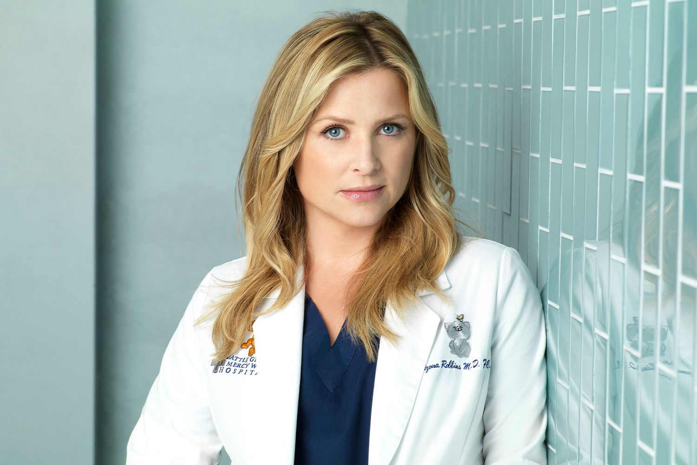
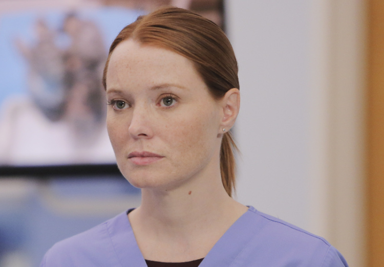
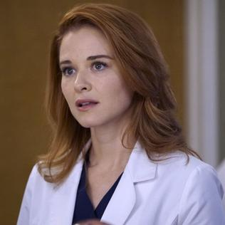
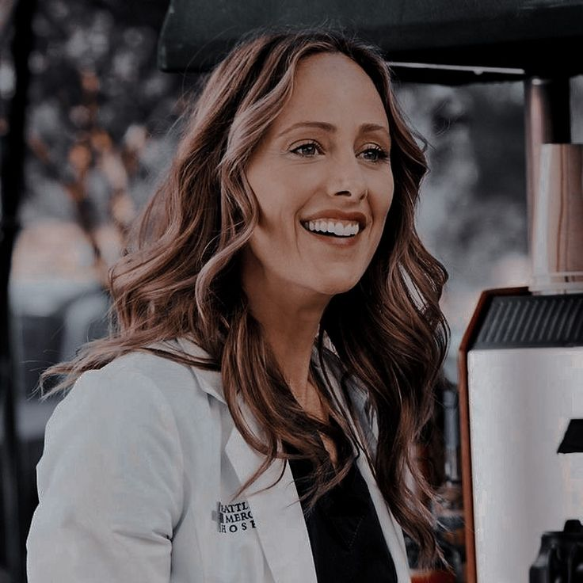
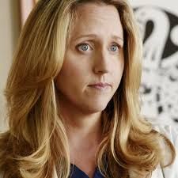
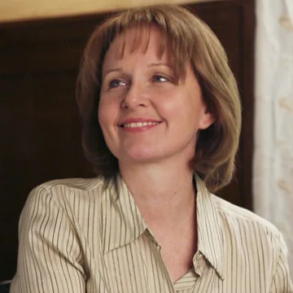

Reason: Owen Hunt is often considered one of the worst characters on Grey's Anatomy due to his inconsistent behavior and toxic relationships, particularly with Cristina Yang and Amelia Shepherd. His actions are frequently selfish, and his emotional immaturity often overshadows his role as a leader and a surgeon. Owen's manipulation in his relationship with Cristina, especially during their tumultuous romance, showcases his inability to communicate effectively and his selfishness in prioritizing his own needs over hers. His fluctuating decisions, such as pressuring Cristina to have children when she clearly didn’t want to, coupled with his inability to fully respect his partners’ desires and boundaries, make him an unsympathetic character at times. Even when he’s a supportive leader or partner, the damage done in his previous relationships leaves him as a polarizing figure, with many fans viewing him as self-centered and emotionally inept.
Reason: Arizona Robbins can be considered one of the worst characters on Grey's Anatomy due to her selfishness and emotional inconsistency, particularly in her relationships with Callie Torres and others. While she starts off as a beloved character, her actions often demonstrate a lack of empathy and an inability to take responsibility for her behavior. Her affair with Lauren, while still married to Callie, is a major turning point, and it significantly damages her reputation. Arizona struggles with commitment and emotional maturity, frequently making decisions based on her own desires without fully considering the impact on those around her. Additionally, her handling of her amputation after the plane crash, while understandable on one level, feels overly self-pitying and alienating to other characters, especially Callie. Ultimately, Arizona’s character arc reveals deep flaws in how she handles her relationships, making her hard to sympathize with at times.
Reason: Penny Blake is often considered one of the worst characters on Grey's Anatomy due to her controversial introduction and the way she’s handled in later seasons. First, Penny’s relationship with Callie Torres is problematic because of how it develops after Callie’s painful divorce from Arizona Robbins, making it feel like Penny is a mere plot device rather than a fully fleshed-out character. Her initial role as a resident at Grey Sloan feels forced, and many fans criticize the fact that she’s introduced as the doctor responsible for Denny Duquette’s death in a past medical error, which unnecessarily tethers her to the tragic history of the hospital. Her relationship with Meredith Grey, in particular, is divisive—while she’s well-meaning, her awkward and sometimes unacknowledged interactions with the established main characters, especially Meredith, feel out of place and add tension without much development. Penny’s lack of strong character growth and her troubled past make her a difficult character to warm up to, leaving many viewers feeling like she undermines the cohesion of the core cast.
Reason: April Kepner is often considered one of the worst characters on Grey's Anatomy due to her inconsistent decision-making, self-righteous attitude, and tendency to make everything about her. While she begins as an earnest and well-meaning character, her naivety often crosses into immaturity, particularly in her relationships. Her on-again, off-again romance with Jackson Avery is one of the most frustrating aspects of her storyline, as she constantly flip-flops between indecision and overly idealistic expectations, ultimately leading to a marriage that feels forced and out of step with both characters' arcs. April’s tendency to push her own personal beliefs on others—whether it’s regarding her faith or her views on relationships—makes her difficult to sympathize with, as she often disregards the feelings of those around her. Additionally, her emotional outbursts and tendency to make rash decisions without fully considering the consequences, such as when she left her job at the hospital or when she had a baby with Jackson during a period of great instability, make her character appear unpredictable and less relatable to many viewers.
Reason: Teddy Altman is often regarded as one of the worst characters on Grey's Anatomy due to her emotional instability, poor decision-making, and the drama she consistently brings to the hospital. Her unrelenting pursuit of Owen Hunt, despite knowing the deep emotional complexities in his relationships with both Cristina Yang and later Amelia Shepherd, makes her come across as selfish and inconsiderate. Teddy's constant interference in Owen's personal life, coupled with her inability to move on after being rejected, creates unnecessary tension and drama that drags on for seasons. Her decision-making as a surgeon is also questionable at times, as she sometimes lets her personal feelings cloud her professional judgment. Teddy’s tendency to create emotional chaos, rather than contributing to meaningful growth or resolution for herself or those around her, leaves her as a frustrating and polarizing character who feels like a disruptor rather than a true member of the team.
Reason: Erica Hahn is often considered one of the worst characters on Grey's Anatomy due to her cold, dismissive attitude and lack of emotional depth, especially when it comes to her relationships. While initially introduced as a talented cardiothoracic surgeon, Erica’s character quickly becomes frustrating due to her inability to connect with others on a personal level. Her relationship with Callie Torres is particularly problematic, as Erica is emotionally distant and refuses to open up, making the relationship feel one-sided. Instead of offering the support and empathy Callie needs, Erica often comes across as indifferent and unyielding. Her abrupt departure from the show, without any real closure or growth in her character arc, further leaves fans dissatisfied, making her seem like a character who was never fully developed or integrated into the core dynamics of the hospital. Erica’s lack of warmth, combined with her abrupt exit, makes her a forgettable and polarizing figure in the series.
Reason: Ellis Grey is often regarded as one of the worst characters on Grey's Anatomy due to her narcissistic and emotionally neglectful behavior, especially towards her daughter, Meredith. As one of the top surgeons in the world, Ellis is incredibly talented, but her genius is overshadowed by her inability to be a present and loving mother. She consistently prioritizes her career over Meredith’s emotional well-being, which creates deep-seated resentment and a fractured mother-daughter relationship. Ellis is dismissive, cold, and often cruel, making Meredith feel inadequate and unworthy of her love or attention. Her manipulative tendencies and emotionally distant nature make her a frustrating character, as she never fully acknowledges the damage her actions cause. Ellis’ lack of empathy and her failure to recognize the importance of family and emotional connection contribute to the toxic environment she fosters, leaving a lasting negative impact on the show’s characters, particularly Meredith.